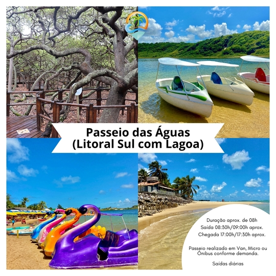
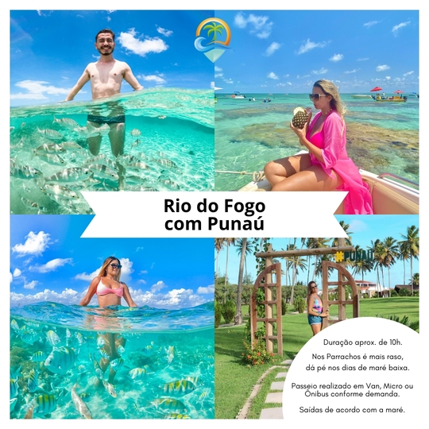

☀️ LITORAL SUL COM LAGOA (PASSEIO DAS ÁGUAS) ☀️
🏖️ NOSSO ROTEIRO:
✔️ Passeio pelo belíssimo litoral sul, onde passaremos em frente a feirinha de frutas de Pium e a Praia de Cotovelo, em seguida, faremos parada para visitação no Maior Cajueiro do Mundo (entrada opcional).
✔️ Seguimos o passeio para a Praia de Camurupim (parada para banho), encantadora por suas piscinas naturais, e na sequência para a Lagoa de Arituba (parada para banho).
✔️ Passeio perfeito para quem está em família, com crianças pequenas, idosos, ou simplesmente busca um passeio tranquilo.
🏖️ INFORMAÇÕES GERAIS:
✔️ Duração aproximada: 08h
✔️ Saídas: Diárias
🏖️ O QUE INCLUI:
✔️ Transporte com Guia de Turismo credenciado.
🏖️ O QUE NÃO INCLUI:
✔️ (Serviços Terceirizados | valores sujeitos a alteração de acordo com o período, sem aviso prévio)
- Consumação;
- Entrada no Maior Cajueiro do Mundo (R$ 8,00 por pessoa);
- Day Use na Lagoa de Arituba (R$ 6,00 por pessoa).
🏖️ RECOMENDAÇÕES:
✔️ Roupas leves, trajes de banho, protetor solar, óculos de sol e chapéu/boné.
🏖️ LOCAL DE ENCONTRO:
✔️ Pegamos e deixamos nos hotéis de Ponta Negra, Via Costeira e Praia dos Artistas.
☀️ RIO DO FOGO COM PUNAÚ ☀️
🏖️ NOSSO ROTEIRO:
✔️ Seguimos até a Praia de Rio do Fogo, onde faremos o embarque em Lancha que saem para alto mar após a liberação da Capitania dos Portos.
✔️ Navegaremos aproximadamente 7km mar adentro, até chegar nos Parrachos onde faremos o mergulho com snorkel e máscara por um período aproximado de 01:30h/02:00h.
✔️ Ao término do mergulho, retornamos ao ponto de apoio, onde teremos tempo para um delicioso almoço com comida típica da região.
✔️ Após o almoço, seguimos para Punaú, onde temos dunas, coqueiros, encontro de rio e mar, reunindo todas as paisagens em um único lugar, um destino turístico tranquilo para relaxar e eternizar lindos momentos.
✔️ É possível fazer um passeio opcional de Quadriciclo, para desfrutar das belíssimas paisagens do Litoral Norte.
🏖️ INFORMAÇÕES GERAIS:
✔️Duração aproximada: 10h
✔️ Saídas: Diárias, de acordo com a maré.
✔️ Veículo utilizado: Van, Micro ônibus ou Ônibus, depende da demanda do dia.
Observação Importante:
✔️ A ordem do passeio pode ser invertida por conta da maré. Em dias em que a maré é a tarde, primeiramente faremos Punaú / Quadriciclo (opcional) e na sequência o mergulho nos parrachos de Rio do Fogo.
✔️ Para melhor satisfação e aproveitamento do passeio, recomendamos a contratação do opcional de Quadriciclo.
✔️ Os clientes que não quiserem fazer o opcional de Quadriciclo, ficarão na estrutura da Fazenda Punaú para se banhar no Rio Punaú e aproveitar para descansar e fazer lindas fotos no local.
🏖️ O QUE INCLUI:
- Transporte com Guia de Turismo credenciado;
- Mergulho com snorkel e máscara;
- Taxas de preservação ambiental;
- Entrada no Hotel Fazenda Punaú.
🏖️ O QUE NÃO INCLUI:
✔️ (Serviços Terceirizados | valores sujeitos a alteração de acordo com o período, sem aviso prévio)
- Consumação (Alimentos e Bebidas);
- Passeio de Quadriciclo (R$ 250,00 por máquina);
- Fotos subaquáticas e/ou Fotos no Quadriciclo (Valores variam de R$ 70,00 acima, conforme pacote contratado);
- Outros opcionais não especificados anteriormente.
- Snorkel e máscara (são itens emprestados, todos os dias eles são higienizados e reutilizados).
🏖️ RECOMENDAÇÕES:
✔️ Roupas leves, trajes de banho, protetor solar, óculos de sol e chapéu/boné.
🏖️ LOCAL DE ENCONTRO:
✔️ Pegamos e deixamos nos hotéis de Ponta Negra, Via Costeira e Praia dos Artistas.
☀️ PIPA COM PRAIA DO AMOR ☀️
🏖️ NOSSO ROTEIRO:
✔️ Pipa é considerada uma das praias mais bonitas do Brasil.
✔️ Seguimos até o Vilarejo de Pipa, onde você poderá fazer lindas fotos na Vila Mangueira (Vila Grega) e na Rua do Céu. E depois descer para a Praia da Pipa, onde teremos tempo para banho.
✔️ Na Praia da Pipa, é possível contratar um passeio (ocpional) de lancha, que vai até a Baía dos Golfinhos, dura em torno de 1h. Importante salientar que fazendo o passeio de lancha opcional, não há muito tempo para explorar o passeio no Vilarejo da Pipa. Pessoas que tem tendência a enjoar, não indicamos a contratação do opcional de lancha em Pipa.
✔️ Na hora do almoço aproximadamente, o guia encontrará o grupo no Vilarejo e seguirá para almoçar no restaurante Amô, que fica no alto das Falésias do Chapadão da Praia do Amor.
✔️ Através da escadaria deste restaurante é possível ter acesso a praia do Amor, e ainda na parte superior a esquerda, fica o Chapadão da Praia do Amor, onde é possível ter uma bela vista da Praia do Amor, com formato de coração (possível de ser visto em dias de maré baixa).
IMPORTANTE SABER:
✔️Pipa é um dos destinos mais procurados do país, por isso sempre está bem cheio, principalmente nos finais de semana, feriados prolongados e períodos de alta temporada.
✔️ A geografia local de Pipa é em um local com várias ladeiras e escadarias, infelizmente não há muita acessibilidade para pessoas com dificuldade de locomoção.
✔️ Haja vista que as ruas sempre estão cheias de pessoas circulando, a transição de veículos pequenos dentro do vilarejo é quase impossível, quanto mais dos veículos maiores de passeio. Diante disso o município determinou que Vans, Micro ônibus e ônibus, não podem ficar circulando dentro do Vilarejo, ou seja, os passageiros são desembarcados pela manhã na principal Avenida de Pipa (Av. Baía dos Golfinhos), praticamente em frente a um dos locais mais desejados pelos turistas (Vila Mangueira), e no horário marcado pelo guia, o mesmo embarcará os passageiros novamente para seguirmos com o roteiro do passeio.
✔️ Em Pipa os turistas ficam livres pelo período da manhã (entre o horário de desembarque e embarque conforme combinado com o guia), durante esse tempo o turista pode aproveitar para conhecer o vilarejo da Pipa, fazer fotos na Rua do Céu e Vila Mangueira (ambas ficam na Av. Baía dos Golfinhos), bem como descer em direção a Praia do Centro (Praia da Pipa) para tomar banho de mar ou até mesmo contratar o opcional passeio de lancha para conhecer a baía dos golfinhos.
✔️ Pedimos gentilmente que todos os clientes estejam no local e hora marcada pelo guia, pois o veículo do passeio não pode ficar parado muito tempo no local que é utilizado apenas para embarque e desembarque de passageiros.
✔️ Importante não se aproximar demais das falésias para evitar acidentes.
✔️ Ao chegar no Restaurante Amô que fica em cima do Chapadão da Praia do Amor, aproveite o espaço que é belíssimo e todo instagramável para fazer lindos registros.
✔️ Pela direita do restaurante tem acesso ao Chapadão onde é possivel conhecer e fazer fotos incríveis (não fique na beira da falésia, mantenha uma distância segura para evitar quedas).
✔️ Por dentro do restaurante Amô, você verá que há uma escadaria que da acesso a Praia do Amor, vale a pena encarar os diversos degraus e desbravar a Praia do Amor que é maravilhosa principalmente na maré baixa.